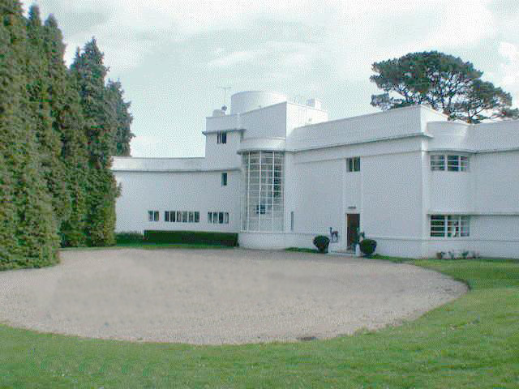
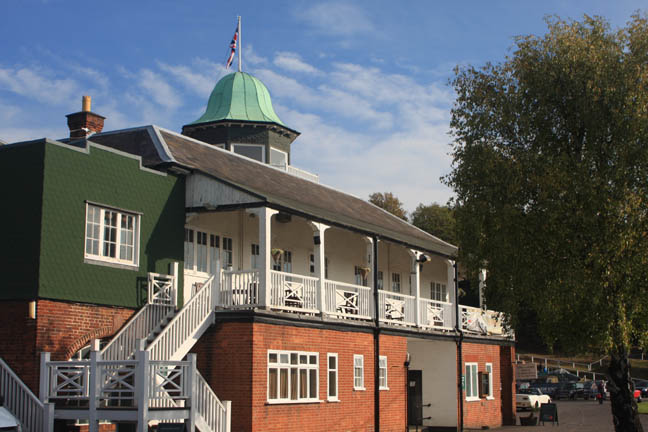
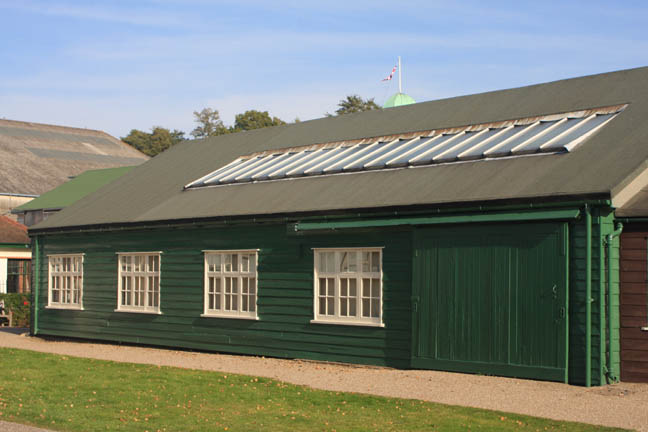
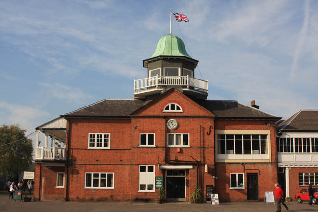

Joldwynds is a Grade II 'Moderne' House in Holmbury St Mary, Surrey. It was designed by architect Oliver Hill for Wilfred Greene, 1st Baron Greene. Also used in 'The Theft of the Royal Ruby'. It was Hill's first 'Moderne' commission before that of the Midland Hotel, Morecambe, Lancashire (which featured in 'Double Sin').

Brooklands Museum, Surrey.

Hastings tries out a Bugatti outside this building.

Brooklands Museum, Surrey.